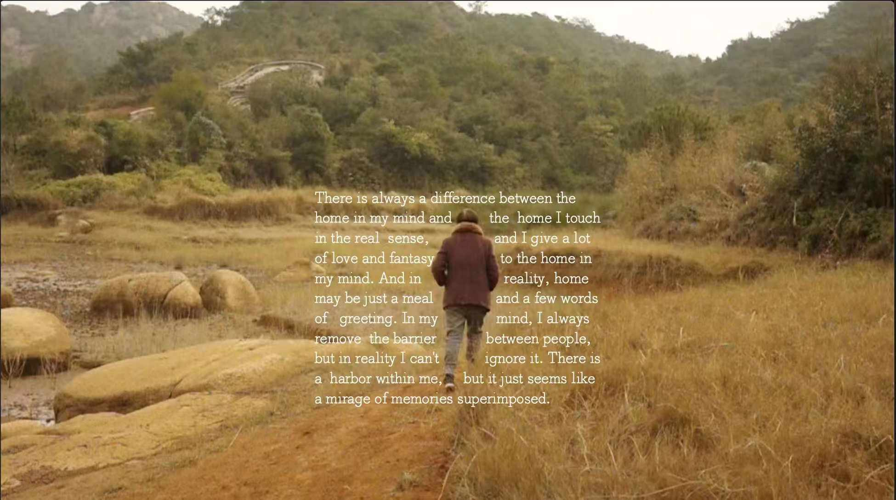
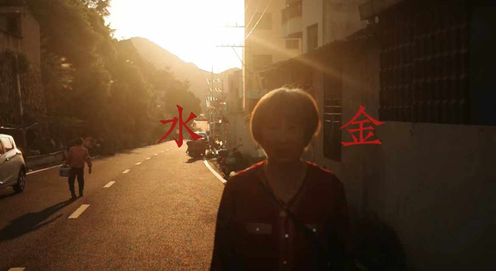
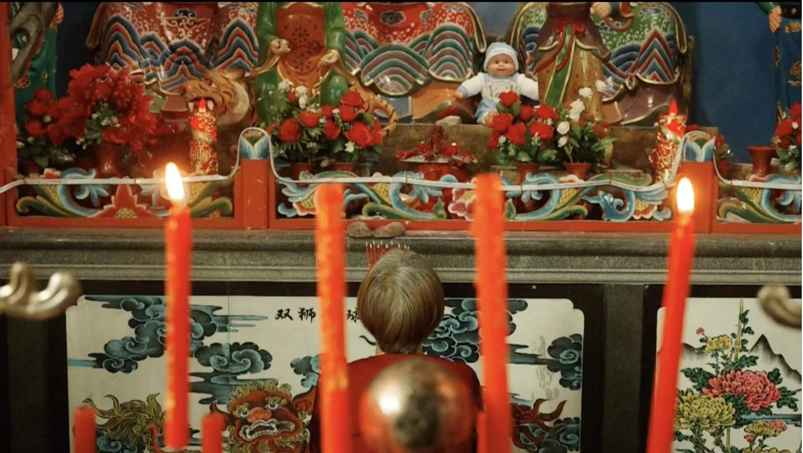

《寻家》 Finding a Home



人的一生离开家，寻找家，找到家。万变不离其宗的一项或许由生本能（eros）驱动向目的地前进。无限感情蔓延开来，回首的路线会组成一幅人生答卷。
Throughout one's life, we leave home, search for home, and find home. Perhaps driven by the life instinct (eros), we move forward toward our destination. Endless emotions spread out, and looking back, the paths we've taken form a canvas of life's answers.